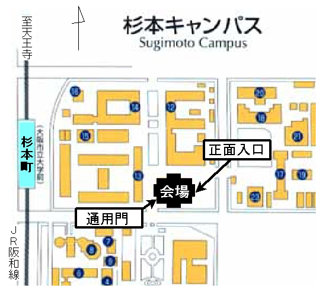

重要なお知らせ
ポスター発表1件あたり、縦 180cm, 横 90cmの板を用意しています。
また、ポスター発表に先立ち、各ポスター発表につき3分間の ショート・プレゼンテーション(口頭発表)を、以下に従って 行います。
○ 各ポスター発表につき3分間。時間厳守。
質疑応答は行いません。
○ OHP発表のご用意をお願いします。
PCプロジェクタは、ショート・プレゼンテーションでは使用できません。
○ プログラムに従って、きれめ無く行いますので、次の方は壇上の近くで
御待機ください。
